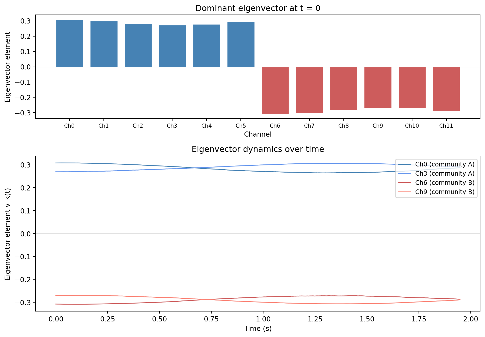
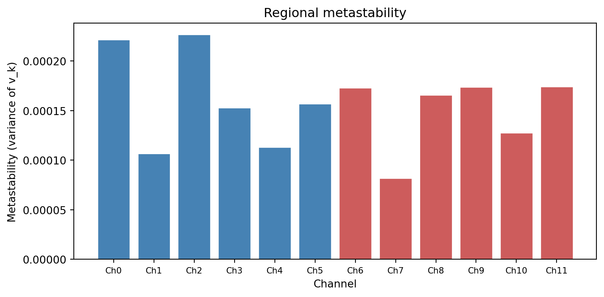

Extracting the dominant eigenvector from the phase alignment matrix, interpreting its elements as participation weights, sign conventions, tracking eigenvector dynamics over time, and linking eigenvector variability to metastability.
Published
31 March 2026
Modified
9 May 2026
Why this topic matters
The phase alignment matrix tells you how every pair of channels is related at a single moment in time. But an \(N \times N\) matrix is hard to interpret directly, especially when \(N\) is 16 or 32 or 64 channels. You need a way to summarise the dominant pattern of coordination across the entire network in a single, interpretable vector.
That is what eigendecomposition does. The dominant eigenvector of the phase alignment matrix captures the primary pattern of phase alignment at each time point. Tracking how this vector changes over time is the basis for computing regional metastability, the core measure in Natalia’s project.
What eigendecomposition does to the phase alignment matrix
The phase alignment matrix \(A(t)\) at time \(t\) is a real, symmetric \(N \times N\) matrix with entries \(A_{ij}(t) = \cos(\phi_i(t) - \phi_j(t))\). Because it is symmetric, it has \(N\) real eigenvalues \(\lambda_1 \leq \lambda_2 \leq \dots \leq \lambda_N\) and \(N\) corresponding orthogonal eigenvectors \(v_1, v_2, \dots, v_N\).
Each eigenvalue-eigenvector pair captures one “mode” of the matrix. The largest eigenvalue \(\lambda_N\) and its eigenvector \(v_N\) capture the strongest pattern of pairwise alignment. The second-largest pair captures the next strongest pattern that is orthogonal to the first, and so on.
In practice, the largest eigenvalue typically accounts for a substantial fraction of the total variance in \(A(t)\), meaning that the dominant eigenvector is a good summary of the whole matrix.
Why the largest eigenvalue’s eigenvector captures the dominant coordination pattern
The eigenvector associated with the largest eigenvalue is the direction in channel space along which the phase alignment matrix has the most “spread”. In concrete terms:
If all channels are perfectly in phase, the alignment matrix is all ones. It has one large eigenvalue (\(\lambda_N = N\)) with an eigenvector \(v_N = (1/\sqrt{N}, \dots, 1/\sqrt{N})\), and all other eigenvalues are zero.
If channels form two anti-phase groups, the dominant eigenvector has positive values for one group and negative values for the other.
If channels are completely desynchronised, the eigenvalues are spread out and the dominant eigenvector accounts for only a small fraction of the total variance.
The dominant eigenvector answers the question: “What is the main pattern of coordination at this moment?” It tells you which channels are working together and which are in opposing communities.
Interpreting the elements of the dominant eigenvector
Each element \(v_k(t)\) of the dominant eigenvector corresponds to one channel (brain region). Two properties matter:
Sign = community membership
Channels with the same sign (both positive or both negative) are in the same phase community: they are aligned with each other. Channels with opposite signs are in anti-phase communities: when one group is at its peak, the other is at its trough.
For example, if \(v(t) = (0.3, 0.4, 0.35, -0.25, -0.3, -0.28, \dots)\), then channels 1-3 form one community and channels 4-6 form another. The two communities are in anti-phase with each other.
Magnitude = participation strength
The absolute value\(|v_k(t)|\) tells you how strongly channel \(k\) participates in the dominant pattern. A channel with \(|v_k| = 0.45\) is a strong participant. A channel with \(|v_k| = 0.05\) is barely involved: it is not well aligned with either community.
This means the dominant eigenvector gives you a complete picture of network organisation at one moment: who belongs to which community, and how strongly each member participates.
A concrete interpretation
Imagine you have 16 EEG channels and the dominant eigenvector at time \(t\) is:
Channel
Region
\(v_k(t)\)
Interpretation
Fp1
Left frontal
0.32
Community A, moderate
Fp2
Right frontal
0.28
Community A, moderate
C3
Left central
-0.35
Community B, strong
C4
Right central
-0.38
Community B, strong
O1
Left occipital
0.02
Barely involved
O2
Right occipital
0.05
Barely involved
This tells you that frontal regions are synchronised with each other but in anti-phase with central regions. Occipital regions are not strongly involved in this particular pattern. One second later, the eigenvector might look completely different, with different communities and different participation levels.
The sign ambiguity problem
Eigenvectors have a fundamental ambiguity: if \(v\) is an eigenvector, then so is \(-v\). Multiplying an eigenvector by \(-1\) does not change its mathematical meaning; it just swaps which community is “positive” and which is “negative”.
This is not a problem at a single time point, because the community structure is the same regardless of the overall sign. But when you track \(v(t)\) over time, a random sign flip between adjacent time points creates a spurious jump that has nothing to do with real changes in brain dynamics.
The continuity fix
The standard solution is simple. At each time point \(t\), compute the inner product between \(v(t)\) and \(v(t-1)\):
If the inner product is negative, the eigenvector has flipped sign relative to the previous time point, so you multiply it by \(-1\) to restore continuity. This ensures that the time series of eigenvector elements changes smoothly when the underlying coordination pattern changes smoothly.
You must initialise the process by choosing a sign convention for the first time point. A common choice is to ensure that the element with the largest absolute value is positive.
Once you have the sign-corrected dominant eigenvector at each time point, you have a time series \(v_k(t)\) for each channel \(k\). This time series describes how channel \(k\)’s role in the network changes over time.
Stable v(t) = rigid system
If \(v_k(t)\) stays approximately constant, then channel \(k\) always plays the same role in the dominant coordination pattern. It is always in the same community, with the same participation strength. The network configuration is rigid.
At the network level, if the entire vector \(v(t)\) is nearly constant, the brain is stuck in one coordination pattern. This is what we expect to see in conditions characterised by pathological rigidity, such as Parkinson’s disease with excessive beta synchrony.
Variable v(t) = flexible system
If \(v_k(t)\) fluctuates, then channel \(k\) switches between communities, or its participation strength changes over time. The network is reconfiguring, exploring different coordination patterns.
At the network level, variable \(v(t)\) means the brain transitions between different states. This flexibility is associated with healthy brain function, cognitive adaptability, and the ability to respond to changing demands.
Connection to metastability
The variability of \(v_k(t)\) over time is exactly what regional metastability measures:
\[\text{MS}_k = \text{Var}_t\!\big(v_k(t)\big)\]
A channel with high \(\text{MS}_k\) has a highly variable eigenvector element: it frequently changes its community membership or participation strength. A channel with low \(\text{MS}_k\) is locked into a fixed role.
This provides a spatial map of flexibility across the brain. You can ask: which regions are most flexible? Which are most rigid? Do patients and controls differ in specific regions?
Relationship to PCA and dimensionality reduction
If you are familiar with Principal Component Analysis (PCA), eigendecomposition of the phase alignment matrix will feel familiar. PCA decomposes a covariance matrix into eigenvectors (principal components) that capture the main directions of variance. The dominant eigenvector of the phase alignment matrix serves a similar role: it captures the main pattern of coordination.
The differences are:
PCA operates on a covariance matrix computed over time (each entry summarises a time-averaged relationship). The phase alignment matrix is computed at a single time point (each entry is an instantaneous phase relationship).
PCA gives you static components. Eigendecomposition of \(A(t)\) gives you time-varying components.
In PCA, the first component explains the most variance. Here, the dominant eigenvector captures the strongest pattern of phase alignment.
The key conceptual link: both methods use the eigenvector of a matrix to find the most important pattern in a high-dimensional dataset. If you understand one, the other is a short step away.
Working example: eigendecomposition and eigenvector dynamics
Let us build a phase alignment matrix from simulated phases, compute its eigendecomposition, and visualise the eigenvector. Then we will track how the eigenvector changes over time.
import numpy as npimport matplotlib.pyplot as pltnp.random.seed(42)# Parametersn_channels =12n_timepoints =500fs =256freq =10# Hz# Simulate phases with community structure# Channels 0-5: community A (coupled together)# Channels 6-11: community B (coupled together, anti-phase with A)t = np.arange(n_timepoints) / fs# Base phase that advances at 10 Hzbase_phase =2* np.pi * freq * t# Generate phases with couplingphases = np.zeros((n_channels, n_timepoints))for ch inrange(n_channels):if ch <6:# Community A: base phase + small noise phases[ch] = base_phase +0.3* np.cumsum(np.random.randn(n_timepoints)) / fselse:# Community B: base phase + pi (anti-phase) + small noise phases[ch] = base_phase + np.pi +0.3* np.cumsum(np.random.randn(n_timepoints)) / fs# Add time-varying perturbation to make it dynamic phases[ch] +=0.5* np.sin(2* np.pi *0.2* t + ch *0.5)# Compute phase alignment matrix and dominant eigenvector at each time pointv_dominant = np.zeros((n_timepoints, n_channels))for tp inrange(n_timepoints):# Build phase alignment matrix phi = phases[:, tp] phase_diff = phi[:, None] - phi[None, :] A = np.cos(phase_diff)# Eigendecomposition eigenvalues, eigenvectors = np.linalg.eigh(A) v = eigenvectors[:, -1] # dominant eigenvector v_dominant[tp] = v# Sign continuity fixfor tp inrange(1, n_timepoints):if np.dot(v_dominant[tp], v_dominant[tp -1]) <0: v_dominant[tp] *=-1# Ensure first eigenvector has its largest element positiveif v_dominant[0, np.argmax(np.abs(v_dominant[0]))] <0: v_dominant[0] *=-1# Re-run sign fix after initialisationfor tp inrange(1, n_timepoints):if np.dot(v_dominant[tp], v_dominant[tp -1]) <0: v_dominant[tp] *=-1# --- Plot ---fig, axes = plt.subplots(2, 1, figsize=(10, 7), gridspec_kw={"height_ratios": [1, 1.5]})# Top: bar chart of dominant eigenvector at t=0colours = ["steelblue"if v >0else"indianred"for v in v_dominant[0]]axes[0].bar(range(n_channels), v_dominant[0], color=colours, edgecolor="white", linewidth=0.5)axes[0].set_xlabel("Channel")axes[0].set_ylabel("Eigenvector element")axes[0].set_title("Dominant eigenvector at t = 0")axes[0].axhline(0, color="grey", linewidth=0.5)axes[0].set_xticks(range(n_channels))axes[0].set_xticklabels([f"Ch{i}"for i inrange(n_channels)], fontsize=8)# Bottom: eigenvector elements over time for 4 channelsselected = [0, 3, 6, 9]labels = [f"Ch{i} (community {'A'if i <6else'B'})"for i in selected]colours_line = ["steelblue", "cornflowerblue", "indianred", "salmon"]for i, ch inenumerate(selected): axes[1].plot(t, v_dominant[:, ch], label=labels[i], color=colours_line[i], linewidth=1.2)axes[1].set_xlabel("Time (s)")axes[1].set_ylabel("Eigenvector element v_k(t)")axes[1].set_title("Eigenvector dynamics over time")axes[1].legend(loc="upper right", fontsize=9)axes[1].axhline(0, color="grey", linewidth=0.5)plt.tight_layout()plt.show()

Top: the dominant eigenvector at a single time point, showing two communities (positive and negative values). Bottom: eigenvector elements over time for four selected channels, showing how their roles in the network change.
In the top panel, you can see the community structure: channels 0-5 have positive eigenvector values (community A) and channels 6-11 have negative values (community B). The bar heights show participation strength.
In the bottom panel, you can see how the eigenvector elements change over time. Community A channels (blue lines) stay positive and community B channels (red lines) stay negative, but the magnitudes fluctuate. The variance of each channel’s time series is its regional metastability.
# Compute regional metastabilityregional_ms = np.var(v_dominant, axis=0)fig, ax = plt.subplots(figsize=(8, 4))colours_bar = ["steelblue"if i <6else"indianred"for i inrange(n_channels)]ax.bar(range(n_channels), regional_ms, color=colours_bar, edgecolor="white", linewidth=0.5)ax.set_xlabel("Channel")ax.set_ylabel("Metastability (variance of v_k)")ax.set_title("Regional metastability")ax.set_xticks(range(n_channels))ax.set_xticklabels([f"Ch{i}"for i inrange(n_channels)], fontsize=8)plt.tight_layout()plt.show()print(f"Global metastability (mean across channels): {np.mean(regional_ms):.6f}")print(f"Min regional metastability: {np.min(regional_ms):.6f} (Ch{np.argmin(regional_ms)})")print(f"Max regional metastability: {np.max(regional_ms):.6f} (Ch{np.argmax(regional_ms)})")

Regional metastability for each channel, computed as the variance of the dominant eigenvector element over time. All channels show similar metastability because the simulation uses uniform coupling within each community.
Global metastability (mean across channels): 0.000156
Min regional metastability: 0.000082 (Ch7)
Max regional metastability: 0.000227 (Ch2)
Key takeaways
Eigendecomposition of the phase alignment matrix extracts the dominant pattern of coordination at each time point.
The dominant eigenvector (associated with the largest eigenvalue) summarises which channels are aligned and which are in anti-phase.
Each element’s sign indicates community membership; its magnitude indicates participation strength.
The sign ambiguity (eigenvectors can flip sign arbitrarily) must be fixed using a continuity check: flip \(v(t)\) if \(v(t) \cdot v(t-1) < 0\).
Tracking \(v_k(t)\) over time reveals whether a region’s role is stable (low metastability, rigid) or variable (high metastability, flexible).
Regional metastability is simply \(\text{Var}_t(v_k(t))\): the variance of the eigenvector element over time.
The approach is conceptually similar to PCA, but applied to instantaneous (not time-averaged) coordination matrices.